SKATING
Have you been skating much lately?
In the past two months I havent really skated that much. Granted, I have my cruiser board and I skate to work every morning or whatever but not in like, a spiritual way. No, I have not been skating. It's disheartening, I was thinking about it today. Like how you have to be in the correct mindset and the correct physical form to skateboard and have it be enjoyable, at least for me, you know? If you can't perform it's kinda like, ‘Well, what the hell am I doing?’
Are you filming for anything?
I’ll film myself. I just bring my phone and a little tripod and I just set it up. I was skating this spot that had this stuff set up, I've posted some stuff on my Instagram account from it. I have to have this really comfortable space to skate in and this is something I've struggled with for a long time. If you know anything about New York it's just a crazy hodge podge of people operating and all kinds of shit going on. Skateparks included. That kind of stuff never stopped me before. I was always so militant about my practice but I've skated for the last 35 years of my life, you know? Not like I might as well do something else, because if I had a choice between not having to work and skating and getting paid for it, like yeah, of course I would do that. I don't want to say that's not a choice or not an opportunity for me because everything you get in life is based on inviting it into your life or pursuing it or whatever it is. Sometimes it doesn't come easy, sometimes it does. But right now this is where I'm at.

Are you riding for anyone at the moment?
No, I haven't ridden for any companies in like 10 years.
Did you choose to leave the industry? In ‘Pushed’ you said something about regretting not taking the industry route.
No, because I was never in the industry. Well, I shouldn't say that. I was for a moment when I lived in San Francisco. When I chose to move and live in New York, I basically seceded from the industry. Especially because at that point the internet wasn't really a thing. It was still the days of like, if you’re not where the magazines are and the industry is, you basically are not in the industry. When I say something like I said in what you just referenced, part of me in retrospect maybe thinks I could've had a more cushy existence operating inside the industry if I had stayed in San Francisco or if I moved down to Los Angeles or San Diego. I just knew that wasn't what I wanted at that point. I just wanted to be like, home, skating with the stuff that I thought was interesting. For a long time it was basically the west coast of the United States, you know? That's where the industry was. There's nothing wrong with that, that's just the way that it happened. In terms of New York, I guess I did it. I lived in New York and had my career, you know? Because everything that you see of me was filmed in New York for the most part. It's all just like how you pull it off, and communication and staying in touch and staying relevant, and staying visible is a big part of it.
What’s your setup like as a free agent?
I simply ride 7.75s, I ride the low ventures and I ride 50mm spitfire wheels and that to me is like, fine. Sometimes people enjoy just switching things up for the hell of it. I have a friend who, I’ll see his setup and one day he's riding Indies and then the next day he’s riding like Thunders and he's like ‘Oh I just decided to try these out’, but in my mind I’m like ‘I would never try that because I know what works for me’, but who knows? Maybe if I switched to Thunders it would work way better.
Do you have a favorite board?
The only thing that I really don't like is when a board is fully dipped and the sides are painted. I definitely don't like that because it makes it feel and look thicker than it should be. I can be okay with certain top colors of stains but I tend to like darker stains. I really like purples and blues and I tend not to like greens because I don't like looking down at a green top. I'm just not a huge fan of green in general. I don't wear green shirts, I tend not to wear green hats. Every now and again I will. For instance someone posted some footage of my 411 Wheels of Fortune and in it I’m wearing some brown pants. Oh, another thing is I tend not to wear white shoes. So in it I have brown pants on, white shoes and a green shirt and I'm like, ‘Man, I would never, ever wear that’. But the reason I'm wearing that green shirt is that it was one of the first Stereo shirts that I ever got sent when I first got on so I wore it and it was almost like a badge of honor.

The other thing that's really interesting is, those white shoes that I was wearing, I believe they're Nike Blazer's. So this is about ‘94-’95 and this is before Nike had come back into skateboarding. Ryan Hickey really turned me onto the Blazer, but he would buy them from the sneaker stores and I was like damn those look like amazing sneakers. I'm actually wearing them too, in my Slap Checkout, and I'm grinding this rail that's in either Marin County or Oakland or something. Once Nike got reinvolved in skateboarding I never ever wore Nikes again until maybe the last ten years. Actually right after I stopped riding for IPath I was kinda like ‘Oh my God, what shoe am I gonna wear?’. I had this thing where I was opposed to Nike being involved in skateboarding but this was the only shoe that really appealed to me so what I started doing is removing the Nike logos from them. One of the first posts I ever posted on Instagram is me removing the Nike logos off my Air Force 1s. The other thing is that I used to buy those at the store for like 10 dollars. Now I‘ll get them other ways, but I don't wanna divulge how I get them.
Wait, wait [redacted]
[redacted]
Vert influence?
Let me just say this, everyone from my generation, that's the case for. I grew up in the transitional period when street skating was mimicking the vert skating on the street when there was no vert ramp. I mean, obviously you can just push down the street and you don't push on a vert ramp but anything you do on a curb, a ledge, a bank, anything to a certain extent is based around the lip and the transition and the face wall of a vert ramp, whichever one you’re skating. I mean of course the mini ramp was there too. The miniramp kind of became a thing in the late 80s and obviously with mini ramp skating there was the ability to kind of get slightly more technical without the risk of falling from a 10 foot vert ramp or whatever. Yeah, so that's the case for everyone from my generation, is that we’re mimicking vert skating.

Are all the cellar door and bank clips a byproduct of that? Or were you actively seeking out cellar doors?
Well it's a natural byproduct of looking at your environment as a skatable entity, you know? You probably walk around, drive around and you’re like, ‘Look, that ledge has a bank that leads right up to it’ you know? ‘So instead of going from flat I can go up the bank’. I love that element where you can do something from flat onto a ledge, some people take the bank to get onto the ledge, some people have the power to get up there from flat. It's kind of an interesting thing.
There was a clip recently on 400 lines of Reese Forbes skating Tampa where he grinds up the small hubba. He grinds from flat then hops into the bank and then I think he does like a frontside flip on the bank in the back. And that's a great example of just like looking at an object differently, you know what I'm saying? And in Reese's case, having the power to get up the ledge and across the flat and into the thing. I'm pretty short, so skating a ledge, what might be considered short or a smaller ledge to somebody else, is a taller ledge to me. So it's a case by case kinda scenario. For me that was also a general byproduct of my environment. That stuff was just around me.
Who's your favorite skater skating right now?
Okay, here's a really funny one. I really like that Dan Corrigan dude and it's partially because I’ll watch Youtube, not for skateboarding, but at some point I might have looked up an Andy Anderson video or something. So I got turned onto his channel and I really like the commentary and I like the tricks that he does, sort of. I like some of the tricks that he does. He’s really good, he's an amazing skateboarder. Some of it I almost will pass off as like ‘that's not a real trick’ but I come from this mindset of like you gotta hit your tail, no wallies, no slappies, whatever. Obviously I'm much more lenient with that stuff now, even though in my own skating I tend to not employ the slappy/wallie sort of trick selection. But yeah I like his videos. There are plenty of folks that are incredible skateboarders. For instance I watched that dude Corey Juneau skate the Combi bowl once. Mind boggling shit. Erik Winowski. I like a lot of transition skaters. This goes back to like me growing up on vert skating, you know? Just random people, but do I have a favorite? No. my favorite will always be Mark Gonzales, you know? And Guy and Julien and Mike York and Chico. These are the classics in my mind.
Top Tricks By Obstacle
This chart categorizes every trick from every part into specific obstacles. Click on an obstacle of interest to reveal the top tricks associated with it.
Do you put a lot of thought into trick selection?
I just tried to find spots that no one had ever skated before, you know? And skate them in a way that for me personally, because a spot had never been skated before, I had kind of the pick of the litter in terms of the low hanging fruit, so to speak. I could film the easiest trick on it and because it had never been seen before I could get away with doing something ‘simple’, then for the next person who comes and skates that spot, they have to do something slightly more difficult or whatever. Somebody fairly recently, I think it was the instagram account Village Psychic, posted the ollie over the bump in green point or whatever you call it, driveway bump. I land and quickly grind that two stair that's right after it and then they posted the antithesis of that, which is Josh Wilson grinding it and then ollieing over the thing.


I was thinking about it today and I was like, ‘Oh, I wonder which one was technically more difficult?’ People would be like ‘Oh, it would probably be more difficult to grind the stair and then have enough speed and energy to clear the bump’, but it's quite possible that what I found difficult to grind that stair, was that right as I landed it basically is upon you and you have to have the ability to grind the stair. Whatever. It's just a setup thing, right? Set up and power. But I was thinking if I hadn't ollied the thing and grinded the stair, if when, let's say hypothetically Josh Wilson got there, he would've ollied the thing and grinded the stair first, but because that had already been done with having to go the opposite direction, you know what I'm saying?
How do you feel about NBD culture?
Well in many respects, when I was producing content as a pro skateboarder that was a huge thing to adhere to, what has already been done at the spot, because in many respects it was the equivalent of stepping on somebody's toes. Like if you’re an MC, you don't want to use the same exact beat as this person or say the same rhyme that that person has said. You would have to face repercussions in that culture, you know? In skateboarding it's like ‘Oh, well it's just skateboarding dude. Ease up a bit, don't be such a dick.’ but it's like ‘No. this is my art’. You’re ripping off my art, you know what I'm saying? But then you’re a dick if you say that because skateboarding is this like, no rules, everything, anything goes. Especially in today's culture, you have to be pleasant and socially accepting and all the rest of it or else you face that person on instagram that's going to make the cancel post about you. I mean whatever, that's all well and good. Do whatever you need to do.
I like the hip hop producer analogy. Do you think at a certain point it's reasonable to start building on top of things and paying homage or whatever?
Well it depends on how you do it and then a lot of it depends on knowing your history. Look, at the end of the day you go out, you spend a bunch of time finding a spot, getting a filmer there, you do it, and then next thing you know somebody comes along and does the same exact thing. Yours came out first, and then right behind you somebody’s doing the same exact thing or something different. And lets just say hypothetically they get credit for it, when if you didn't bondo it, it wouldn't have been skateable for them. Again, I don't want to come off as some bitter old guy because I've left this all behind me, but this was a big deal for me back in the day. At a certain point it was a thing to just go to NYC to get your NYC clips, you know? So there was like a real rush to get to certain spots, it kind of sucks. I'm not saying I've never done it. I guess what I'm saying is that I put in a lot of energy into the way that I put my stuff out there and sometimes, yeah, if there is a bit of time that passes people are gonna skate your stuff. But then even like what I just said, like 'your stuff’. It's not my stuff. I didn't build that. I don't know, man. It is what it is. That was a point in skateboarding where like, especially in New York, it did really mimic in my mind like graffiti culture or hip hop culture. There were people that spent a lot of time producing a beat and it was just not kosher for somebody to come and just take the beat, you know what I'm saying? A lot of the time, if you did take somebody's lyrics, you were like outwardly trying to diss them. That was like battle language, you know what I'm saying? Basically ‘I'll steal your shit. What are you gunna do?’ kinda thing.
But then in skating there's like Ali Boulala going back to that 25 with Jaws.
Sure, yeah, what am I gonna say? Part of me could say it's in bad taste or in poor taste, there's much more egregious examples, for instance, the one that really always bothered me was Ricky's last trick in the static part where he ollies that big gap, and then that Nick Dompierre came up behind him and kickflipped it like not too long after. I was like damn dude, that's amazing to kickflip that thing but this is Rick’s thing. Like let the dude fuckin live, you know? Go kickflip something else that you discovered, you know what I'm saying? Even though that spot is like right under everybody's noses, Nick Dompierre was not kickflipping it until Rick ollied it. Nick at that point was still kind of a little kid, it was just like, a little kid thing to do, you know? I always thought it would be rad to ask Rick about that and listen to him talk about it.
This is probably going to get me in a lot of trouble depending on how many people read your magazine, but recently I saw, I think, Mackenzie Eizenhour posted the Cincinnati rail that Pops back 50’d. It's like this white rail and it goes over like a grass patch and it's tall and short and obviously Pops back 50’s it in his Photosynthesis part. Now granted, did Pops find that spot? No. He’s in Ohio. I guarantee somebody brought him there. But I recently saw that somebody back smithed it like 14 years later or some shit and I'm like ‘Damn dude’. I know there's like the homage shit but you can't find another rail to go and back smith? You gotta step on this dude, who I'm sure you really like, you know? Cocomo Joe, who's an obscure skater from Ohio, was the first person to skate it and he front-boarded it. Cocomo Joe probably finds that spot, front boards it, and then here comes Pops, somebody brings him there. It doesn't end. It is what it is. And again, when you go back to hip hop culture and you cite some of the more interesting episodes in hip hop - for instance, the battle between MC Shan and KRS-ONE Boogie Down Productions over ‘The Bridge Is Over’ and Queensbridge producing the first echos of hip hop. That battle that ensued is one of the crowning jewels of hip hop culture and is part of the culture you know, and probably some of the greatest rhymes that have ever been written and beats that have ever been produced. ‘The Bridge Is Over’ is in response to somebody stepping on somebody's toes, you know what I'm saying? It is what it is, you know. I'm not gonna say whether it's good or bad. As human beings this is what we engage in, you know? Take it or leave it. For better or for worse.
Percs
This table breaks down each part into percentages of different metrics.
Go watch V5 again because it's actually mental how many cellar doors he's managed to skate.
How do you think New York influenced your skating?
Again, this is getting into the realm of like documentation like ‘Hey, I'm the first person to skate this thing’. Maybe it's not the truth every single time, but a lot of the time, like I said, it's like low hanging fruit. If you did the front 5-0 on it you don't have to do the nosegrind nollie flip out, you know? Also at that time you could probably say that like, the nosegrind nollie flip out wasn't that cool or the spot’s super difficult or you’re about to get fucking kicked out by Joe Schmo who lives in the building whos front stairs you’re fucking destroying. So a lot of the time it was just like get in, get the trick, get the fuck out, move to the next thing. There's definitely been times where I’ve gone back to try and get stuff but you know, New York man. Just like anywhere, its a fuckin’ pain in the ass a lot of the time, you know?
A lot of the time I was working with particular themes in my skating where it wasn't 100% trick based. I was thinking about it the other day and maybe I was never a skateboarder to begin with, you know? Maybe I was just interested in composing. It's almost like an artist. You want to use this spot to make a connection between the physical form, the human body and architecture. I dont want to compare it to like parkour or something, its a weird fucking grey area. Skateboarding, sport or art?
ART
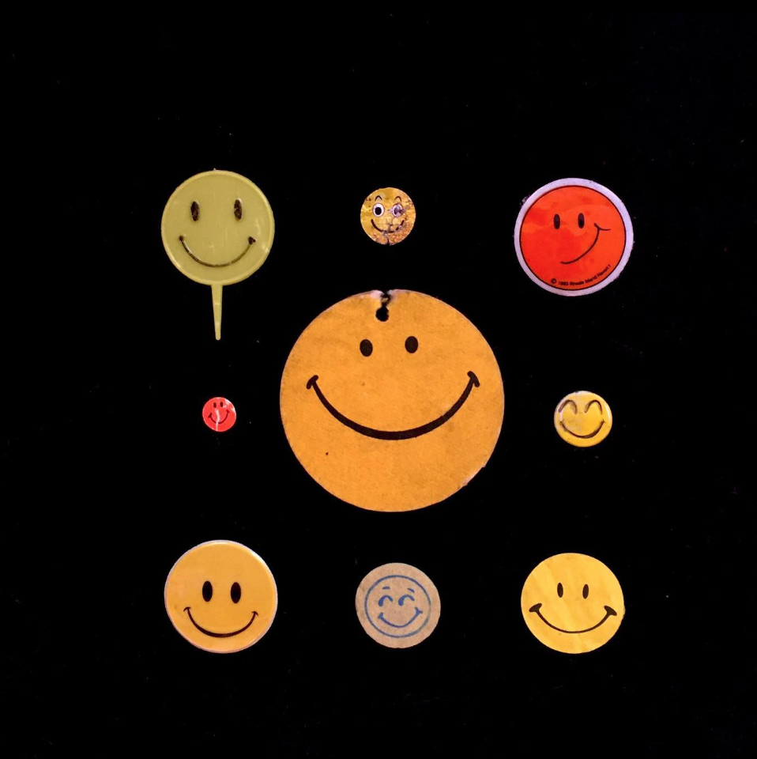
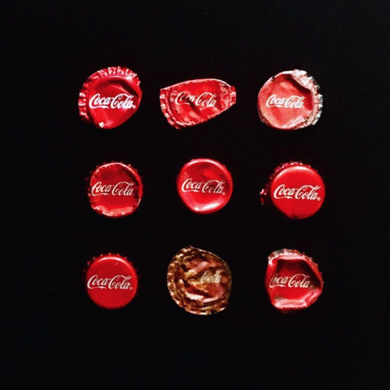
Speaking of art, how did you get into that? Have you always collected things?
I'm the oldest of four boys in my family, my mother had three other children after me and they're all boys. I'm assuming this has something to do with your place in the litter, you know? And as the oldest, you see another kid come behind you… Ha, it's funny that I'm talking about this, but you see another child come behind you and you’re vying for your mother’s attention or your father's or your family's attention and that could really honestly be some sort of glimpse into why I am the way I am and why I do the things that I do. Obviously I would play with my toys but I was more into like amassing, which is kind of fucked up, but its not the worst thing in the world. There are people that kill other people, you know what I'm saying? When I was a kid two of the things that I collected feverishly, or tried to. I loved baseball cards and I loved Star Wars figures, those two things I tried to keep in immaculate condition. What’s interesting is like filming video parts, you amass tricks in this like, catalog or arsenal. It becomes part of your resume. That's probably part of what attracted me to skateboarding, is that I could go down this checklist and learn these different tricks or these moves. It becomes much like battling. Going back to hip hop/breakdancing, there's like a competitive edge there. The other thing is that I don't come from like, money or anything, so I amass these objects almost like a currency. If you place value on something and present it in a certain light, others might find it valuable. A lot of my art and collecting habits, especially with my own personal experience with it, it becomes like a little bit of a treasure hunt, you know?
Do you have anything in your collection that you've never found again?
Oh yeah totally, I mean there's plenty of examples I could show you. But in terms of like one object, a lot of the time I'm not going to pick up something that's just like a single object because it's rare. This is a good example, the other day I was riding my bike down the street and I saw this thing and it looked like it was ripped in half, which it was, and then I went a little further and there was a second one. This is definitely not some sort of crowning jewel but it was a particular seasoning for chicken, and I rode past the one that was ripped and I saw the one that was not ripped. I liked the idea of two of them next to one another. Now, am I going to find 9 of this packaging? Absolutely not. I've never seen it before on the street. It was a product of somebody's recycling getting ripped open and it spilling out all over the street. There's plenty of objects that I collect that have cool packaging that I know I will just never ever find nine of, but I'll just grab it. Oh, here's another thing I'll show you really quickly. So these David sunflower seeds, can you see this?
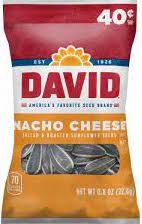
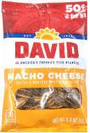
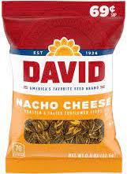
Yeah
Okay, so this packaging, when I first started to collect David's sunflower seeds packaging. This packaging was different, not totally different but this is the nacho cheese flavored David's right? Okay so this is how many I have. It's not tons, it's not tons and tons See the 50c? Okay, so these things, for a number of years, were 50c. Each one 50c, 50c. Two days ago I was riding my bike and I saw a David's sunflower seeds nacho cheese on the floor…
Woah.
69c. So this now opens up a whole new realm of - Now I gotta collect nine 69c ones. And the thing that's interesting is that hypothetically, now, I don't know where inflation is going to go, but will David’s ever go back to 50c?
Hell no.
And if they do go back to 50c it's possible that they might change the packaging again. So these 50c ones, this is the amount I've found since David's changed its packaging. I do have a whole collection of the old packaging but this now cements a period of time where this is the amount of 50c David's packages that I have found on the street, and that's kind of like a time period. I have two 69c ones. They're in the back of the 50c ones but it's just because I didn't want to put them aside and have more stuff to catalog. What's interesting is that now I have the old David’s nacho cheese ones, I have the new design with the 50c, and now I have the 69c. These are fairly common to find on the floor. So that's the nacho cheese flavor. There's a whole package that's like a different color scheme that's like regular sunflower seeds. What was the point of me even digging through all that shit?
It's interesting.
You were talking about rare objects that I find.
Yup, that’s right. When I was thinking rare, I was almost thinking more like goblets or jewelry or something.
Oh man, if I showed you my earring and gold collection… The other day I found a bag of coke. That's very valuable to somebody, it's got monetary value. I've found tons of money as well, like regular currency.
Do you think you find more money than an average person?
Absolutely. As a skateboarder, you’re trained to be looking down at the ground because you don't want to roll over that crack that shoots you onto your skull, you know? Plus your periphery and just everything gets developed when you ride a skateboard. It kind of has to be. Especially in New York when you have cars coming at you. I mean just being a pedestrian in New York is a whole set of like extra eyeballs.
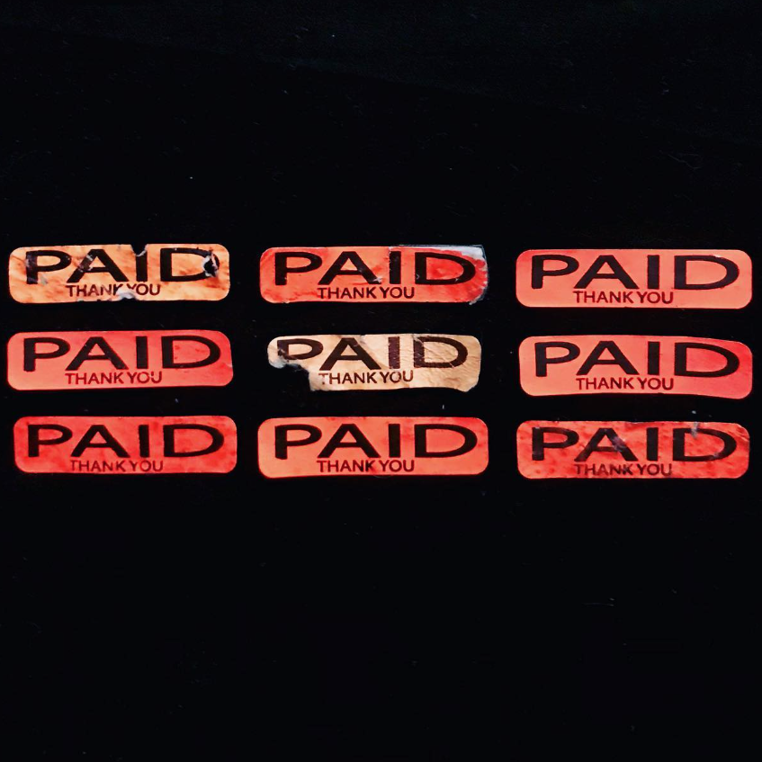
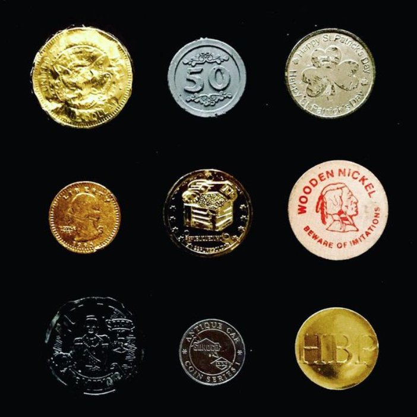
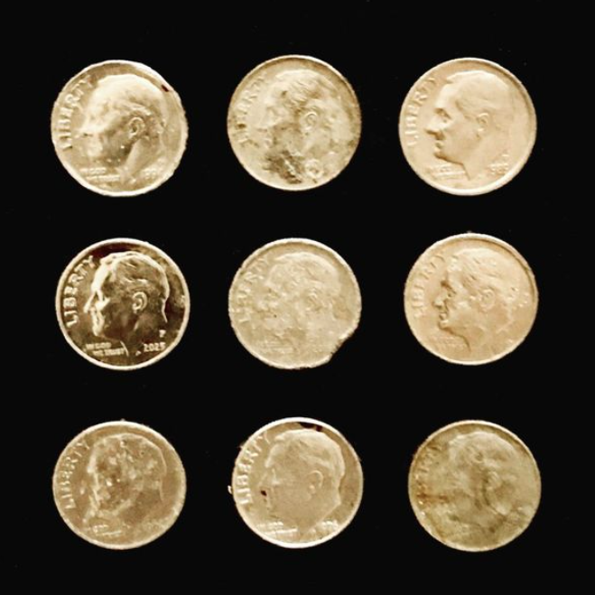
If you find money do you spend it? Or does that go into art?
If it's ripped then it gets logged into the found money thing but if I find regular money I spend it. Usually it's a couple dollars. Every now and again I'll find a $5 bill. Sometimes I'll shoot a photograph of it. The most I ever found in one go was $670.
What? Was it in an envelope?
Well no, but one time I found a $100 bill in an envelope. But this I found strewn about in the gutter in Maspeth. I had skated at this spot in Flushing/Corona border. Over by like Citi Field and I decided to just take this one route home and in the street I literally found a bunch of $50 bills just floating around in the gutter.
No way.
So there was a guy walking next to me, an old man. I feel like he saw them but he didn't even flinch. He just kept walking so I just ditched my bike and started grabbing them. It was quite likely that somebody had dropped it and they were coming back for that shit so I stuffed them all in my pocket. I didnt even count it, I just knew that I was picking up like fifty after fifty and who knows, dude? It could’ve been anybody. It could’ve been their rent, it could've been their drug money, it could've been anything, you know what I'm saying? I was trying to be fast with picking it up and thorough and I was trying to get the fuck out of there because if somebody saw me, I didn’t want to be the product of them retrieving their money. There was no one out, it was just me and this old man and I wasn't going to be like ‘I'm going to the police station to report this’ because what the fuck? It's absurd the way that shit operates but I stuffed it in my pocket and I rode home and I got to my girlfriend's house and I put it out on the table and I was like, ‘Look what I found’ and she just grabbed a 50 and ran into our bedroom. But it was all fifty’s and one twenty dollar bill and it totalled out to $670. I have a photograph of that too, laid out.
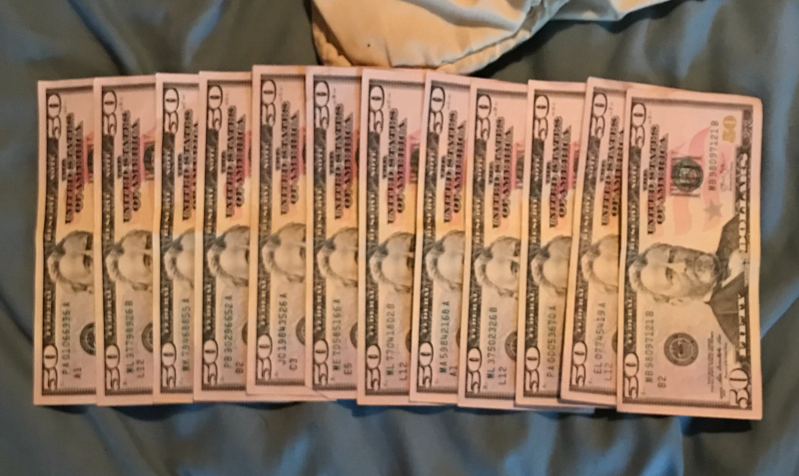
Do you sell your art anywhere?
I do and I will. But I don't go out of my way to try and sell it because like, for instance, this dude just hit me up today or yesterday and he saw something on my gutter gallery account and he's like, ‘Sell me this’, and in my mind I'm like, ‘Ooooh. I've only got nine of those, I can't sell it’. So I have a tendency to hoard my own work which is kind of fucking crazy. There definitely are things that I will sell and there are things that I have sold before, but there are certain objects I'm not willing to sell yet. I try to work with people in terms of giving them a price because if you do want my work, I would like you to have it, but there's certain things that I'm not ready to sell at a certain price. For instance, some of those numbers collections, like, dude. If somebody offered me like a thousand dollars I’d be like ‘Are you out of your fucking mind? This took me like 20 fucking years.’ I'm not taking it as an insult but somebody would have to offer me a lot of money. The other thing is that I've never even really shown those publicly yet. I was set to show those in a gallery space that was not asking me to sell them, they were simply asking me to do a show. So I was getting ready to do it and I was building these pieces and the show was supposed to open like, March 26th of 2020.
Damn.
Yeah, the pandemic put the kibosh on it and it never happened. So all of this art that I built is still in storage, kind of waiting to be shown. Interestingly, they gave me a bunch of frames and when the show got shut down, they allowed me to keep all of the fucking frames that they had given me to build this stuff. Then half the frames that I had, I had stored in my basement and when my basement flooded, I ended up losing half of the frames to water. This is the way energy operates. What god giveth, god taketh away, so to speak, you know? It was kinda funny. To answer your question, yeah. Stuff is available. But you know, a lot of people, especially with my personality, some people are like, afraid of me. They think I'm like this gnarly ass person so they can't enquire. Like, I get nervous around certain people, like ‘Oh my god, that’s fucking whoever’. But nowadays I'm pretty cool with like, people are people. There's definitely objects that I would like to get from certain people. In fact there's this graffiti writer that I really like around my way here and he's more of like a 90s bomber guy and I just hit him up. I commented on like a story he had on instagram and I was like ‘Fuck it, let me see if he’ll like, sell me some art’ or whatever and he was like ‘Yeah, cool’. So I was like ‘Yeah, cool’.
Where can people buy your art? If there's somewhere to do it, it’d be cool to point people in the right direction.
Yeah, totally. I mean my instagram account is that place. I do have two instagram accounts. Actually, technically I have four instagram accounts, one of them I don't really post much to these days and one I kind of keep totally secret, not because it would necessarily hurt people's feelings but I just don't want people knowing that I operate it. It's not a gag instagram account, it's just pictures that I think are funny but I don't want people to know that it's me.
Is one of them for your art?
You've never seen it? It’s @gutter_gallery.
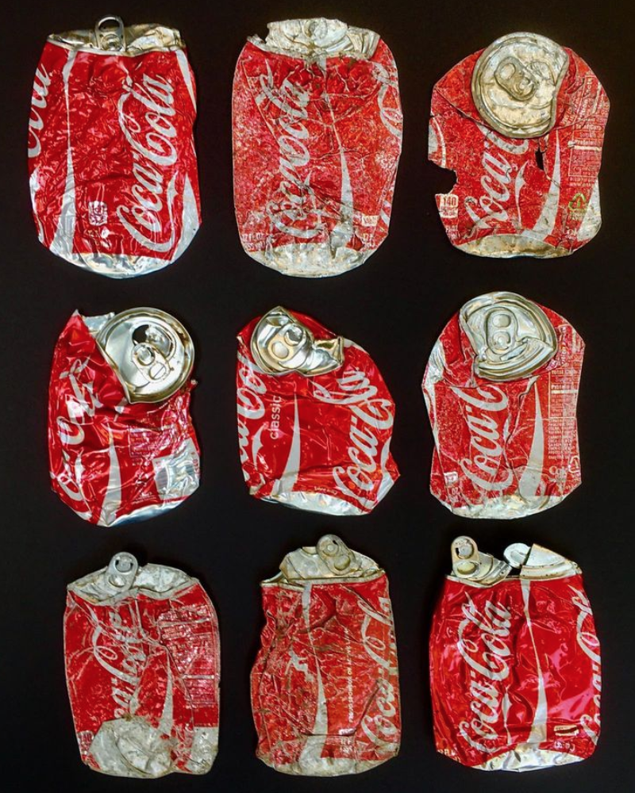
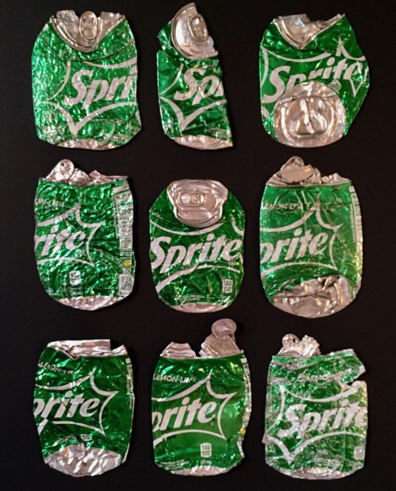
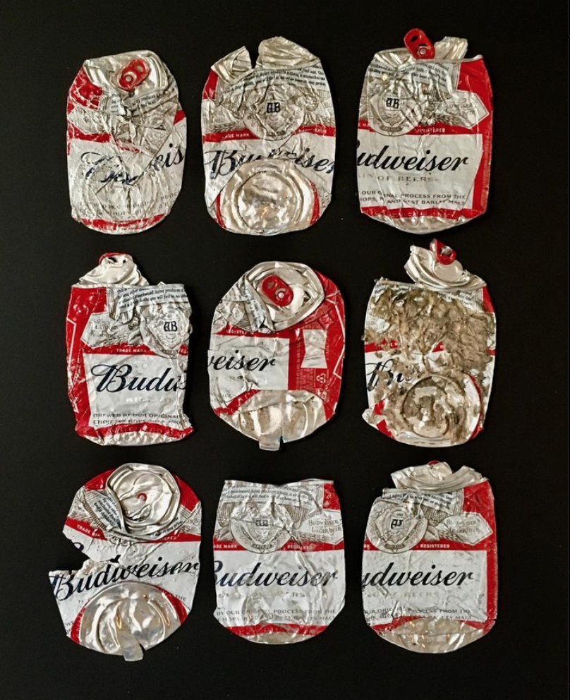
I've only ever seen @timandvicstagram
Oh yeah, yeah, interesting. It's funny because I often think to myself like damn, my art account doesn't have a lot of followers. Partially it goes back to that v5 concept where I was more interested in how people would learn like, ‘Oh, this is his account? Oh that's cool’.
And it's just a little bit more special than having everything handed to you. Nowadays you can type in the name of a skate spot and have your phone direct you to it, whereas back in the day it was like… Going back to hip hop culture, figuring out what a beat was, stumbling upon it or taking a random chance pulling this record out of a crate. Before the internet, man. Things were way more ‘difficult’ and organic you know. I'm not saying that good things don't get made these days but there's so much more of everything and back then, you know, in my opinion the quality was more kind of craftsmanlike. Not to degrade the craftsmanship of today, there's just more of it.
Business
Did the name ‘Victim’ come from that guy on the street yelling at you?
Oh no, I think I might have been wearing a shirt that I'd made. Yeah, that had nothing to do with that. The brand was conceived from a website, like an early blog site that I operated and the URL was www.areyouavictim.com. It was basically in the early days of me getting interested in alternative information, if you will. Even though that sounds weird to say now too because it's like, what is mainstream? Who is your audience, you know? So I was basically operating that website much in the same way I operate my instagram account where it's like 10% skateboarding and mostly just information that I find interesting, ‘conspiratorial’ information depending on who's looking at it. But a lot of the stuff that I post is just basically like ‘factual data’ you know? Again, I shouldn't say factual. But it kind of morphed into the Tim and Vic thing.
Where did that website come from?
The whole Victim thing came out of this project that I did a long time ago called Glass. I wanted to build a brand called Glass and I kinda made some shirts and I was super into it and I was playing around with t-shirts and stickers and stuff and I started to think to myself like ‘Oh, Glass is a good name' but glass is easily broken. You can shatter glass super easily and it also contains the word ‘ass’, so my adversaries can make fun of me by just taking the ‘G’ and the ‘L’ out’. At the same time I was starting to play around with this concept of how information gets thrown around and how people can be manipulated by information and so I started to think to myself like, it's really interesting, you could be being advertised to or you could find yourself having disinformation peddled to you or you could be propagandized and you might not even realize it. Much in the same way you could be watching a television show and that television show could be subtly planting these ideas in the back of your mind whether its subconscious or overtly or covertly and I thought to myself ‘Wow, it’s really interesting how you could be almost like, digging your own hole without even realizing it’, just by subtle things that are put into - I mean Disney is a great example, they've put things into their animation films and it's like, in the clouds it says sex and this is a film advertised to like 10 year olds and you’re like ‘Well why did you do that?’.
Why would they do that?
There's a studio that puts the A113 number and moniker into their movies. You know, there's a reason why they say they do it but the 113 and the 311 has a significance that, in my opinion, goes slightly more into these dubious realms. Dubious might be too loaded of a word, it might be too heavy depending on what you believe, but for instance, the date that the global health pandemic was 3/11 which is 113 backwards but someone can look at this and be like, ‘He’s crazy, that doesn't mean anything.’
Out of everything, why the numbers? They seem like the most likely to be a coincidence or like confirmation bias.
Here's the thing. The connection between numbers and letters, for instance, is very very old, it's an ancient, ancient practice. When you use the term numerology or gematria, which are two kind of different practices. They're connected, but folks will call you crazy or criticize you for that and they don’t understand the history of the relationship between letters and numbers. For instance, the Hebrew alphabet is also a working number alphabet as well. Roman numerals are another great example of letters that also have a dual meaning. So this is where you’re getting into the realm of symbols. Now, symbols are obviously a way to communicate without speaking or speaking the same language. I always say this, as skateboarders we can go to like, China and see another person and you can tell skateboarders just by looking at their shoes. A lot of the time what I find is that detractors or critics just don't understand the nature of the history of what it is that I tend to talk about. For instance, the bible is a great example of numbers that just seem to be thrown in there, like the number 72, the number 108, the number 33. If you don't understand the history of 108 and how many times it's turned up in different religions and throughout history then you would look at this information and be like, ‘That's nonsense’, and once you become educated on it, you become aware of its presence, aware of its resonance. You know, if one doesn't understand it then who cares?
Do you want to have people understand though?
Yeah of course, of course you want to be considered relevant. Well, not relevant, but not considered like, a clown. Of course. But that's up to you. That's like the other day this woman came on the train and was preaching the power of Jesus Christ. It is what it is. That's like you trying to convince someone that skating is the most powerful and creative force in the world or throwing someone in the driver's seat and being like, ‘Drive to the store.’ If they don't know how to drive, they don't know how to drive. It's all about experience and it is what it is you know? I'm done with that. One could make the case that by the media putting out some ridiculous story, they have actually helped you realize that that story is nonsense and have moved you even further into a place where you can identify ‘bullshit’. Almost like they're sharpening your sense for you. So in that respect, the pedaling of nonsense is helping you.
That's another part I don't understand about the numbers, why would they bother putting them everywhere?
Why would they make it so obvious? Like ‘Hey, with this number I'm basically saying that this is bullshit’. The number 33 turns up a lot more consistently. 311, for instance, here's a great example. In the Matrix film that came out in 1995, Neo's birthday is 3/11 on his criminal history. Now a criminal history is something that is binding. His passport in The Matrix states his birthdate as a different date, but the expiration date on the passport is 9/11/2001. A passport restricts or allows you to move around (which is an insane concept because you shouldn't have an agency telling you that you can move, it's a great example of one group of people owning and operating another group of people) and the fact that this film that came out in 1999 had those two dates in it as the date of birth and the date of expiration of a passport, you’re either talking highly coincidental or put in there to massage you.
If, hypothetically, 9/11 was planned far enough in advance that they would’ve known the date before The Matrix was made, why would they put it in The Matrix?
I think there's two things involved. You've read The 12th Planet, and it talks about the relationship of the planets. This now has an astrological significance that kind of continues to our modern day understanding of astrology, right? Certain numbers, certain dates have special significance in moving things to where you want them to go. This is the basis of astrology. Do this on this date because this is when the portal is opened up or whatever. So there's definitely a significance there with the date and the number in terms of resonance. The other thing is that if you understand the way energy operates, you understand that the first rule of energy is that for every action there's an equal and opposite reaction. So this is where you get into that concept of karma, right? The folks who are moving in these circles and using this energy to do what they will in terms of the concept of crowleyan magic, there's a concept that they understand that if you deceive someone then that deception will come back to haunt you. So there's the concept of what they call ‘revelation of the method’ where you put it out there and, for instance… Have you ever watched Nathan Fielder’s show?
Nathan for You or The Rehearsal?
Nathan for You.
I love it.
Do you remember the episode where he brings the guy into the Chinese food restaurant and he wants to get married to the guy and the guy behind the counter delivers the sermon in Cantonese, so the guy that he's marrying doesn't know that he’s about to get married to Nathan because he delivers the ritual in a different language? Then on the list is the name of a menu item and it sounds like ‘I do’ in english. So if you translate it, he's agreed to marry Nathan. They have essentially told him, he just doesn't understand it. So he’s negating the realm of karmic repercussions. I mean this is a little abstract but I think that's where this stuff kind of goes. It's the laws of karma and negating or working with the laws of karma.
That’s mad interesting.
That television show is brilliant because in every episode he demonstrates just how easy it is to manipulate people. People will say ‘Oh, well that's just a television show’, but he's demonstrating for you how he can mask something to a whole city, like when they did the tightrope walk or the Dumb Starbucks, the goat rescuing the pig. So now what you’ve seen is a goat rescuing a pig or whatever and then you had the news report telling you this was true, but behind the scenes this was not true. So this can happen on a large scale, you know? It's just an idea I'm throwing out there. In this kind of surface level way that we operate with information and media, it's a very effective way of dealing with situations because people only take the top layer of something. How deep do you want to get into a subject, you know? We’re designed at this point to not want to have in-depth conversation. We only want talking points, we only want to spend a minute or two on certain subjects and they're also trigger points. In some respects this stuff is great for dividing people and if you’re in the realm of governing people, what do you want to do in order to maintain order and control? You divide them. Get them fighting amongst one another. And now we’re not talking conspiracy, we're talking business. We’re talking logistics. And this is how the flipside maintains order. This is how you run a business. You said earlier about conspiracies, I refer to it as business. Business 101.
Yeah, I guess there’s a difference between believing in lizard people and financial crimes.
This goes back to the concept of what I said before about being propagandized. Most people just accept information as it comes to them and they don’t question it. You either have the choice to dig into that rabbit hole or ignore it, you know? I'm not blaming anyone for not being interested in the same things that I am. Conspiracy theories, a lot of the time, what it will do is bring you to a place where you don’t know if it’s this or don’t know if it’s that, and where does that leave you? It leaves you either confused, undecided or at the point where you say ‘I don't know if it's any of this stuff so I'm just gonna forget about it’. It essentially neutralizes it. So conspiracy theory in a certain respect, it's a neutralizer. It's a divider. Because now if I believe in the conspiracy version of the event, I could possibly find myself at odds with the folks that believe the official narrative of the events. It hinges on division, which is a very important factor when you get into the world of management. If you have five people trying to manage a hundred people, this is Sun Tzu’s Art of War, the first rule of waging warfare is don’t wage war if you don’t have to.
Physically.
Yeah, so this is where psychological warfare comes into play. This is all based on what you know and what you don’t know. And I'm not claiming that I know anything. I'm just pointing out this, this and this you now? Certain people will say ‘Well you’re suggesting that this is proof of a conspiracy theory’. Yeah maybe I'm doing that, maybe I'm not, you know? I'm just pointing out that this is the data.
Well done soldier, that was a long read. Here is one more reminder to watch V5. If you have any ideas, datasets, or pitches you'd like to discuss, hit us up on the 4PLY Instagram. If you have any issues, complaints or concerns, please direct them to our HR department. Thank you for your feedback.